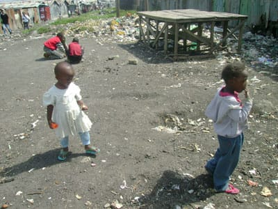

School Transformation Journey
From 60 students in a small church building to over 800 children in a top-ranked school. Witness the complete transformation of Glorious Group of Schools in Mukuru, Kenya — 2006 to 2026.
The Journey of Transformation
What began with a medical mission has grown into one of Nairobi's top schools. Explore each phase of our journey through photos and stories.
Humble Beginnings (2006-2010)
From a medical mission to a small school with 60 students, the foundation of hope was laid.
Dr. Mitchelle Scott goes on a seven-day medical mission to Mukuru wa Njenga. She meets Pastor Bonface Mangeti and witnesses the deep needs of the community — poverty, lack of education, and limited access to healthcare.
Project Restore Hope is founded. Pastor Bonface Mangeti purchases land in Mukuru and establishes a small church and school. The school opens its doors to 60 students — a humble beginning that would change countless lives.
The school grows slowly but steadily. More families in Mukuru begin to trust the school with their children's education. The church becomes a center of hope and community life. Basic infrastructure is established with limited resources.
Growth Phase (2011-2015)
Enrollment surges, the school gains recognition, and the feeding program begins to take shape.
Glorious Nursery & Primary School is formally established. The school begins to attract attention for its commitment to quality education despite operating in an underserved area with limited facilities.
Student enrollment reaches 250. The school expands its classroom capacity. The feeding program is launched, providing one daily meal to students — many of whom come from families struggling with food insecurity.
Enrollment surpasses 500 students. The school becomes a pillar of the Mukuru community. Teachers are hired from within the community, creating local employment. The feeding program expands to provide two meals daily.
Expansion Phase (2016-2020)
The school achieves national recognition. Construction begins to modernize facilities. Community relief programs expand.
The school continues to grow, adding more classrooms and resources. Computer classes are introduced. The orphan support program expands to care for over 50 vulnerable children. National exam performance steadily improves.
Glorious Group of Schools competes against 221 other schools in Nairobi and is ranked the #1 school in the city. This landmark achievement puts Mukuru on the map and proves that excellence can flourish anywhere with dedication and support.
Despite the global pandemic, the school remains a lifeline for the community. Emergency food relief is provided to families. Remote learning materials are distributed. The school's resilience during crisis demonstrates its importance to Mukuru.
Modern Transformation (2021-Present)
New facilities, solar power, computer labs, and a vision for a four-story school building. The school enters a new era.
Major construction projects begin. New classrooms are built. The school installs solar panels to provide reliable electricity. A computer lab with modern equipment is established, giving students access to digital learning.
Over 800 students enrolled. 70 orphans supported. 50 staff employed. Modern offices and facilities are completed. The school continues to rank among the top in Nairobi. Educational trips expand students' horizons beyond Mukuru.
Plans are underway for a new four-story building to replace the aging structure. New classroom blocks are completed. The school continues to provide two meals daily to every student. The vision for a modern, fully-equipped school moves forward.
Before & After
See the dramatic transformation of our school facilities over the years.

Early School Building
The original school structure — humble beginnings with limited resources but unlimited hope.

Modern School Building
New facilities under construction — a testament to the growth and development of the school.
Educational Trips
Students explore the world beyond Mukuru through educational trips that broaden their horizons.
Community & Relief Programs
Supporting the wider Mukuru community through relief efforts, church activities, and development programs.
More Moments
Additional photos capturing daily life, events, and the spirit of Glorious Group of Schools.
Student Life
The children of Glorious Group of Schools — their smiles, their dreams, their future.
Transformation in Motion
Watch the journey of transformation through videos capturing construction, community, and daily life at the school.
Be Part of the Next Chapter
The story isn't finished. Help us build a new four-story facility and continue transforming lives for generations to come.